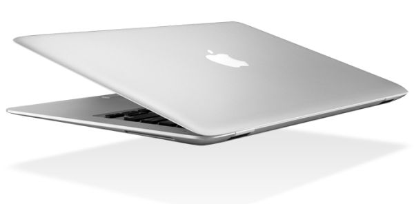
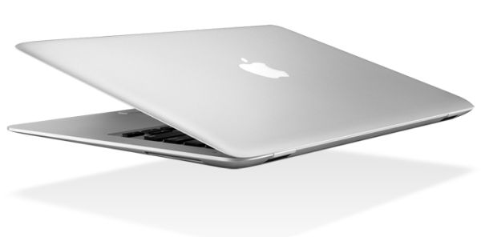

AScroller in native JavaScript v. 0.1
Пример исходного кода:
<div class="AScroller" data-ascroller="gallery mini-scrollerx3 arrows condition full" style="height: 300px;">
<img src="demo/hp_1.jpg" title="HP LP3065" alt="HP LP3065">
...
<a href="http://yandex.ru" style="width:400px;height:400px;">link</a>
...
</div>
Пример сгенерированного кода:
<div class="AScrollerBox" >
<div>
<div class="AScroller">
<div class="Ascroller_box_flex">
<img src="demo/hp_1.jpg" title="HP LP3065" alt="HP LP3065">
</div>
<a href="http://yandex.ru" style="width:400px;height:400px;">link</a>
...
</div>
</div>
<div class="AScrollerCondition"><div></div><div class="curCondition"></div></div>
<div class="AScrollerBoxMini">
<div>
<div class="AScroller_miniImages">
<div class="Ascroller_box_flex">
<img src="demo/hp_1.jpg" title="HP LP3065" alt="HP LP3065">
...
</div>
</div>
<div class="arrows prev"></div>
<div class="arrows next"></div>
</div>
</div>
<div class="arrows prev" ></div>
<div class="arrows next " ></div>
</div>
class="AScroller" - элемент с этим классом будет преобразован скриптом в скроллер с классом AScrollerBox, согласно
заданным флагам в атрибуте data-ascroller этого же элемента, возможно так же указать ширину, максимальную ширину в style атрибуте.
Доступные флаги атрибута data-ascroller:
gallery - скроллер, с окном размером в максимальный размер подэлемента или заданный атрибутом style. Один подэлемент в окне.
mini-scrollerx3 - мини изображения подэлементов скроллера, как обычный скроллер. Шириной окна в xN элементов.
arrows - показывать стрелки у главного окна скроллера.
condition - показывать состояние прокрутки окна.
full - при клике левой кнопкой мыши или прикосновении показывать увеличенные до максимального, но не более размера окна браузера, изображения в новом созданном скроллере. Поддерживается прокрутка стрелками влево/вправо клавиатуры с временным интервалом.
cycle - Включает зацикленный режим скроллера.
cycle-n1000 - Включает зацикленный режим скроллера и автоскроллинг p(назад)/n(вперёд), число - интервал в миллисекундах. При недостатке элементов для плавного перемещения окна будут сделаны клоны элементов, которые, по возможности, будут расположены вне видимости окна. Перемещение элементов с интервалом приостанавливается при наведении и возобновляется, после того, как курсор уйдёт из окна.
cycle-n1000 - Включает зацикленный режим скроллера и автоскроллинг p(назад)/n(вперёд), число - интервал в миллисекундах. При недостатке элементов для плавного перемещения окна будут сделаны клоны элементов, которые, по возможности, будут расположены вне видимости окна. Перемещение элементов с интервалом приостанавливается при наведении и возобновляется, после того, как курсор уйдёт из окна.
На мобильном устройстве будут убраны стрелки и мини-изображения. Поддерживается прокрутка скроллера прикосновением у мобильных устройств и курсором мыши - у пк.
!! Требует поддержки display: flex; браузером.
AScroller со следующими флагами: data-ascroller = " gallery mini-scrollerx3 arrows condition full ". Несколько элементов в скроллере.


AScroller со следующими флагами: data-ascroller = "gallery condition full", и заданными размерами в атрибуте style. Один элемент в скроллере.
AScroller со следующими флагами: data-ascroller = " gallery condition full ", и заданными размерами в атрибуте style. Несколько элементов в скроллере.
AScroller со следующими флагами: data-ascroller = " arrows condition full ". Несколько элементов в скроллере.
 

AScroller со следующими флагами: data-ascroller = " gallery condition full cycle-p2000 ", и заданными размерами в атрибуте style. Несколько элементов в скроллере.